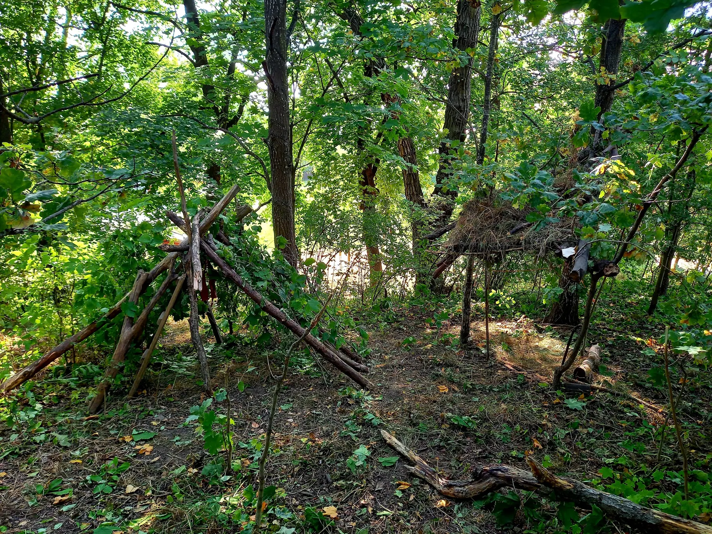

Klagomål eller synpunkter på vår verksamhet
Har du klagomål eller synpunkter på fritidshemmet eller grundskolan? Om vår verksamhet inte motsvarar dina förväntningar eller om du eller ditt barn är missnöjda med något, kan du kontakta oss. Det är viktigt för vårt fortsatta förbättringsarbete. Vi arbetar ständigt med att utveckla våra verksamheter.
- Kontakta verksamheten
Har du klagomål eller synpunkter på något i fritidshemmet eller skolan bör du i första hand vända dig till personalen. Kontakta exempelvis ansvarig fritidshemspersonal eller lärare. Tycker du inte att du får rätt hjälp eller gehör kan du istället vända dig till rektorn. Du kan också vända dig direkt till rektorn om du anser att problemet är allvarligt. - Kontakta rektor
Prata med rektor om ditt problem eller synpunkt. Om du efter samtalet fortfarande är missnöjd kan du kontakta huvudmannen, som är skolans styrelse. - Kontakta huvudmannen
Om du vill kan du vända dig direkt till huvudmannen med ditt klagomål eller synpunkt. Hit vänder du dig också om du inte är nöjd med hur ditt klagomål hanterats av personal eller rektor. Om du vill ha en personlig återkoppling på ditt ärende behöver du lämna namn och kontaktuppgifter. Du har givetvis rätt att lämna klagomål/synpunkt anonymt.Du kan lämna ditt klagomål/synpunkt digitalt via detta formulär (se länk nedan). Har du inte har möjlighet att registrera ditt klagomål/synpunkt digitalt går det bra att skicka dem med post till följande adress:
Rudolf Steinerskolan
Box 744
601 16 Norrköping
Vad händer efter att du lämnat ett klagomål till huvudman?
Vi kommer att kontakta dig gällande ditt klagomål/synpunkt inom 5 arbetsdagar. När ditt klagomålsärende är utrett och avslutas får du ett svar. Om du valt att vara anonym så utreds och dokumenteras klagomålet, men ingen återkoppling kommer att ske. Lämnar du en synpunkt på verksamheten tar vi detta vidare i vårt systematiska kvalitetsarbete.
Har du frågor om klagomålshanteringen?
Kontakta skolans rektor alternativt huvudmannen.
Kontaktuppgifter:
styrelsen@rudolfsteinerskolan.se
Är du inte nöjd med huvudmannens hantering av ditt ärende?
Om du inte är nöjd med huvudmannens hantering av ditt ärende kan du göra en anmälan till Skolinspektionen.
Mer information